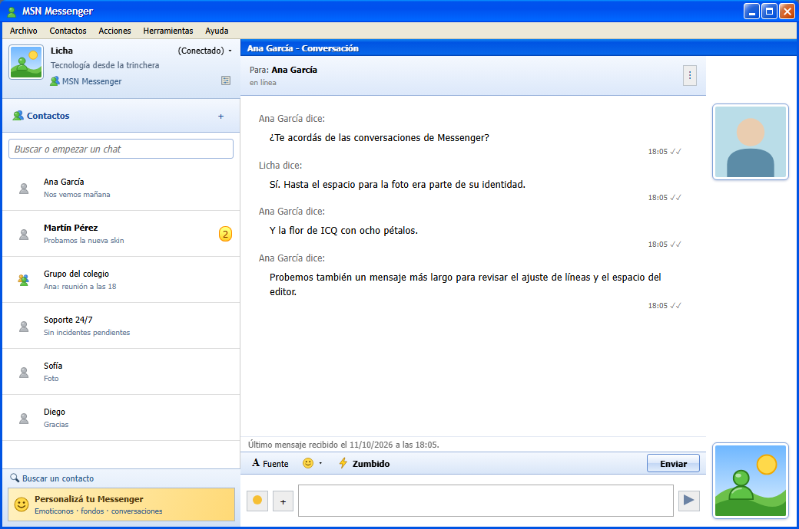

Tu WhatsApp, con la cara de MSN e ICQ.
Retro Messenger viste WhatsApp Web como MSN Messenger 7.5 o ICQ 2000b: zumbidos que sacuden la ventana, el «Uh-oh!», «Juan dice:» y los sonidos originales. Tus chats siguen siendo los de siempre.
Windows, Mac y Linux · ver todas las descargas e instrucciones

Captura con datos de ejemplo.
¿Te acordás de cómo sonaba?
Subí el volumen. Son los sonidos que trae la app, y el zumbido sacude la página igual que sacude la ventana cuando te llega uno.
Es WhatsApp de verdad, con ropa de 2005.
No es un clon ni un servicio aparte: es WhatsApp Web oficial dentro de una ventana con la piel de los messengers que usábamos en el ciber.
Zumbido
Un botón (o Ctrl+G) manda ZUMBIDO en negrita y te sacude la ventana. Si te llega uno, tiembla también. Del otro lado, quien usa WhatsApp normal ve el texto.
Sonidos originales
El mensaje nuevo de MSN, el «Uh-oh!» de ICQ, el aviso de contacto en línea. Podés reemplazarlos por los tuyos.
Avisos de época
Cartelito «X dice:» abajo a la derecha, parpadeo en la barra de tareas e ícono en la bandeja.
MSN Messenger 7.5
- Marco azul de Windows XP con menú Archivo / Contactos / Acciones / Herramientas / Ayuda
- Tu foto, nick, «(Conectado) ▾» y «<Escribe un mensaje personal>»
- Conversación sin globos: «Juan dice:», fotos a la derecha, barra Fuente / Emoticonos / Zumbido
- «Juan está escribiendo un mensaje...» y banner de publicidad trucha
ICQ 2000b
- Gris Windows 98 con relieve, Main, Services y la barrita ICQuick
- Tu ICQ# y nick, estado con florcita: Online, Away, N/A, Occupied, DND…
- «My Contact List» con flores y la notita amarilla de mensaje pendiente
- Message Session con «Juan (19:05):» en rojo y lo tuyo en azul
Bajalo e instalalo en un minuto.
Elegí tu sistema. Después escaneás un código QR con el teléfono, igual que en WhatsApp Web, y listo: la sesión queda guardada.
- Abrí el archivo que se descargó. Se instala solo, sin preguntas ni permisos de administrador, y crea un acceso directo en el escritorio.
- Si aparece «Windows protegió su PC», tocá Más información → Ejecutar de todas formas. Sale porque la app no tiene firma digital (cuesta cientos de dólares por año); el instalador lo arma GitHub directamente desde el código público.
- En el teléfono: WhatsApp → ⋮ / Configuración → Dispositivos vinculados → Vincular un dispositivo, y escaneá el código.
- Para cambiar entre MSN e ICQ: Herramientas → Skin (en ICQ: Main → Change Skin).
Requisitos: Windows 10 u 11 de 64 bits. Para desinstalar: Configuración → Aplicaciones → Retro Messenger para WhatsApp.
- ¿No sabés cuál es tu Mac? Menú → Acerca de esta Mac: si dice «Chip Apple», es Apple Silicon; si dice «Procesador Intel», la otra.
- Abrí el
.dmgy arrastrá Retro Messenger para WhatsApp a Aplicaciones. - La primera vez, macOS la frena porque no está firmada por Apple (la firma cuesta USD 99 por año). En Aplicaciones, hacé clic derecho → Abrir y confirmá con Abrir.
Si dice que la app «está dañada», abrí la Terminal y pegá esto. Le saca la marca de «descargado de internet»; no toca nada más:
xattr -cr "/Applications/Retro Messenger para WhatsApp.app" - Escaneá el QR desde WhatsApp → Dispositivos vinculados en el teléfono.
Requisitos: macOS 12 (Monterey) o más nuevo.
- .deb: doble clic, o desde la terminal en la carpeta de descargas:
sudo apt install ./Retro-Messenger-linux-amd64.deb - .rpm:
sudo dnf install ./Retro-Messenger-linux-x86_64.rpm - AppImage (sin instalar nada):
Si no arranca, faltachmod +x Retro-Messenger-linux-x86_64.AppImage ./Retro-Messenger-linux-x86_64.AppImagelibfuse2(Ubuntu 22.04:sudo apt install libfuse2; 24.04:sudo apt install libfuse2t64). Si en Ubuntu 24.04 se cierra con un error de «sandbox», agregá--no-sandboxal final o usá el .deb. - Abrí Retro Messenger para WhatsApp desde el menú de aplicaciones y escaneá el QR con el teléfono.
Requisitos: Linux de 64 bits (x86_64). Para ver el ícono en la bandeja de GNOME hace falta la extensión «AppIndicator and KStatusNotifierItem Support».
Nostalgia, con criterio de ingeniería.
Lo armé en un fin de semana trabajando codo a codo con asistentes de IA. La idea era chica; las decisiones, no tanto: no romper WhatsApp, no tocar tus datos y que funcione en los tres sistemas.
WhatsApp Web, el de siempre
La app es una ventana de Electron que carga web.whatsapp.com tal cual, con tu sesión guardada en tu compu. No hay servidores intermedios ni cuentas nuevas: es el mismo WhatsApp Web que usarías en Chrome.
Una piel, no un clon
Encima va CSS que cambia cómo se ve y una capa propia con la foto, el nick y la barra del zumbido. Todas las referencias al HTML de WhatsApp están en un solo archivo: cuando WhatsApp cambia algo, se arregla ahí.
Nada sale de tu compu
El nick, el mensaje personal, el estado y el ICQ# son decorativos y se guardan local. La app no lee ni manda mensajes por su cuenta: solo escribe ZUMBIDO cuando vos tocás el botón.
Hecho con IA, revisado por humano
Claude y Codex escribieron buena parte del código y yo revisé, probé y decidí. Así trabajo: la IA acelera, el criterio lo pone uno. Los instaladores los arma GitHub Actions desde el código público.
Lo que todos preguntan.
¿Es seguro?
El código es público y los instaladores los arma GitHub automáticamente a partir de ese código, así que cualquiera puede ver qué hace. La app solo muestra WhatsApp Web con otra ropa: no pide permisos especiales ni instala nada más.
¿Me pueden bloquear la cuenta de WhatsApp?
Usa WhatsApp Web oficial, sin modificar cómo se conecta ni qué envía. No automatiza nada: el único texto que escribe por vos es ZUMBIDO, y solo cuando tocás el botón, con un límite de uno cada 10 segundos. Es lo mismo que escribirlo a mano.
Igual, es un proyecto de fan y no está aprobado por WhatsApp: usalo sabiendo eso.
¿Qué datos toca?
Ninguno sale de tu computadora. La sesión de WhatsApp queda guardada como en cualquier navegador, y el nick, el estado, el mensaje personal y el ICQ# se guardan en un archivo local. No hay analíticas ni servidores propios.
¿Por qué Windows o Mac me avisan que no es seguro?
Porque no tiene firma digital paga (cientos de dólares por año en Windows, USD 99 por año en Mac). El aviso es por la falta de firma, no por algo que la app haga. En Instalar está explicado cómo abrirla igual.
¿Mis contactos ven algo raro?
No. Para ellos sos el WhatsApp de siempre. Lo único que les llega distinto es el zumbido, que ven como el texto ZUMBIDO en negrita. Si ellos también usan Retro Messenger, les tiembla la ventana.
¿Cuesta algo?
No. Es gratis y de código abierto (licencia MIT). La «publicidad» del skin de MSN es de mentira, como homenaje.
¿Funciona en el celular?
No: es para computadora (Windows, Mac y Linux). El teléfono solo lo usás para escanear el código QR la primera vez.
Algo se ve mal o dejó de funcionar.
WhatsApp cambia su web seguido y a veces algo se desacomoda. Avisá en GitHub o por mis redes y lo arreglo en una versión nueva.
Tecnología desde la trinchera.
Retro Messenger es uno de mis proyectos. Vengo de sostener operaciones críticas 24/7 y hoy construyo sistemas con Python, APIs e inteligencia artificial aplicada, y explico tecnología en castellano.